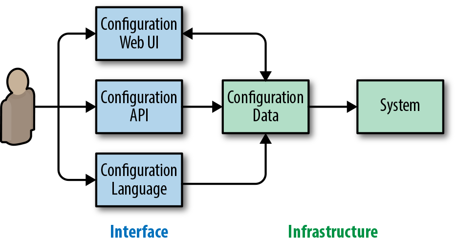

无论在哪里，配置系统都是 SRE 的常见工作。 这项工作可能既令人疲惫，又因细节繁多而令人沮丧；如果工程师并不十分熟悉所配置的系统，或者配置在设计时没有充分考虑清晰性和易用性，情况尤其如此。配置通常发生在两类场景中：一是在时间充裕时完成初始设置，二是在处理事故、需要紧急重新配置时。
本章从基础设施系统设计者和维护者的视角审视配置，并介绍我们以安全、可持续的方式设计配置时积累的经验与策略。
部署软件系统时，我们不会把它们视为固定不变的事物。业务需求、基础设施要求和其他因素不断演变，系统因而始终处于变化之中。如果需要迅速改变系统行为，而代码变更又必须经过成本高昂、耗时漫长的重新构建和部署流程，那么修改代码就无法满足要求。此时可以使用配置（configuration）：粗略地说，它是一种用于修改系统行为的人机界面，能以较低开销改变系统功能。SRE 在部署系统、调优性能以及响应事故时经常使用配置。
可以把系统看成由三个关键部分组成：
软件
系统处理的数据集
系统配置
这些部分凭直觉不难辨认，但实际往往没有清晰的界线。例如，许多系统使用编程语言进行配置，或至少能够引用编程语言。Apache 及其模块就是一例，例如 mod_lua 及其请求钩子；另一个例子是窗口管理器 XMonad 及其基于 Haskell 的配置。同样，数据集也可能包含代码，例如 SQL 存储过程，其复杂程度足以构成完整应用。
良好的配置界面能让用户快速、有把握地修改配置，并对变更进行测试。如果用户没有简单明了的配置更新方式，就更容易犯错，还会面临更高的认知负担和陡峭的学习曲线。
系统最终由人管理，因此配置也由人负责。配置人机界面的质量，会影响组织可靠运行系统的能力。配置界面设计得好坏，对系统长期可维护性的影响，与代码质量的影响类似。
不过，配置与代码在几个方面存在显著差异。通过代码改变系统能力，通常要经历漫长而复杂的流程，包括小步增量修改、代码审查和测试。相比之下，只改一个配置项就可能使功能发生巨变。例如，一条错误的防火墙规则就可能把您挡在自己的系统之外。与代码不同，配置往往存在于未经测试、甚至无法测试的环境中。
系统配置有时必须在巨大压力下修改。事故期间，配置系统能否简单、安全地调整至关重要。早期飞机的界面设计就是前车之鉴：令人困惑的控制装置和指示仪表曾导致事故。当时的研究表明，无论飞行员的技能或经验如何，操作失误都很常见。1 易用性与可靠性之间的联系同样适用于计算系统。设想一下，把操纵杆和表盘式仪表换成 .conf 文件与监控图表后会怎样。
设计新软件，或用现有软件组件组装新系统时，我们通常都会讨论配置。 系统要怎样配置？配置如何加载？我们把配置这个总主题分为两部分：配置理念与配置机制。
配置理念讨论的是完全独立于所选语言及其他实现机制的方面，包括如何组织配置、如何选择恰当的抽象层次，以及如何顺畅支持不同的用例。
配置机制则涵盖语言设计、部署策略以及与其他系统交互等主题。本章对机制着墨较少，部分原因是语言选择等话题在业界已有广泛讨论。此外，一个组织可能早已有配置基础设施等强约束，因此配置机制很难一概而论。下一章介绍 Jsonnet，将以现有软件为背景给出配置机制、尤其是语言设计方面的实际示例。
把理念与机制分开讨论，有助于更清晰地分析配置。实际工作中，如果配置要求用户提供大量难以理解的输入，那么 XML 或 Lua 等配置语言的实现细节并不重要。反过来，即使输入本身极其简单，若必须通过非常笨拙的界面录入，也会产生问题。以（非常）早期的 Linux 内核配置过程为例：用户必须在命令行终端中依次执行命令，逐项设置参数。哪怕只纠正一个最简单的错误，也要从头重走一遍配置流程。2
本节讨论与具体实现完全无关的配置问题，因此这些原则适用于各种实现。
按照下面介绍的理念，最理想的配置就是完全不需要配置。在理想情况下，系统会根据部署方式、工作负载，或新系统部署时已经存在的配置片段，自动识别正确配置。当然，对许多系统而言，这个理想在实践中很难完全实现。不过，它明确指出了配置应前进的方向：减少大量可调参数，走向简单。
过去，关键任务系统会提供大量控制装置（本质上就是系统配置），但也要求操作员接受大量培训。请看图 14-1所示的 NASA 航天器控制中心复杂操作台。在现代计算机系统中，对业界绝大多数组织而言，这类培训已不再可行。
这种理想状态虽然会削弱我们对系统的控制能力，却也减少了出错面，并降低了操作员的认知负担。随着系统日益复杂，操作员的认知负担变得越来越重要。
我们在 Google 的实际系统中运用这些原则后，系统通常很容易在内部得到广泛采用，用户支持成本也很低。
无论配置什么、采用何种方式配置，人机交互最终都可以归结为一个向用户提问的界面，请用户输入系统应如何运行。无论用户是在编辑 XML 文件，还是在使用图形化配置向导，这种抽象方式都成立。
在现代软件系统中，可以从两种不同的视角看待这个模型：
基于尽量减少用户输入这一基本理念，我们更倾向于以用户为中心的视角。
这项软件设计决策的影响并不限于配置。以用户为中心设计配置，意味着软件必须围绕核心受众的一组具体用例来设计，因此需要开展用户研究。相反，以基础设施为中心的软件实际上只提供基础能力；要把它变成实用系统，用户还必须完成大量配置。这两种模式并非截然对立，但要兼顾二者可能相当困难。看似违反直觉的是，配置选项有限的软件有时比功能极其灵活的软件更容易普及：因为软件基本能够“开箱即用”，用户上手所需的投入会小得多。
最初采用基础设施中心视角的系统，可以随着自身成熟，通过多种方式移除一些配置项，逐渐转向以用户为中心；后文将讨论其中若干方法。
既然遵循以用户为中心的配置理念，就应确保用户能轻松理解所提问题与自身目标的关系。 用户输入的性质可以看成一条连续谱：一端是用户用自己的语言描述需求，配置项较少；另一端则由用户精确描述系统应怎样实现需求，配置项更多。
可以用泡茶来类比系统配置。配置项较少时，用户只需说“热绿茶”，就能得到大致符合要求的饮品。连续谱的另一端，则要指定整个过程：水量、烧水温度、茶叶品牌与口味、浸泡时间、茶杯类型，以及杯中茶水的量。更多配置项或许能让结果更接近完美，但严格遵循这些细节所付出的成本，可能超过一杯近乎完美的茶所带来的边际收益。
这个类比对用户和配置系统的开发者都有帮助。用户指定精确步骤时，系统必须照做；如果用户改为描述高层目标，系统就可以持续演进，不断改进目标的实现方式。为此，第一步必须事先充分理解用户希望系统实现什么目标。
为了具体说明这条连续谱在实践中的表现，可以考虑作业调度。假设您需要运行一次性的分析流程。像 Kubernetes 或 Mesos 这样的系统可以帮助您实现运行分析这一真正目标，而不必操心分析流程究竟应在哪台或哪些物理机器上运行。
一套配置可能包含两类问题：必答问题与可选问题。 必须回答必答问题，配置才能提供任何功能。例如，某项操作的费用应由谁承担。可选问题不决定核心功能，但回答后可以提升功能质量，例如设置工作进程数量。
为了保持以用户为中心并便于采用，系统应尽量减少必答配置问题。这并不容易，却十分重要。有人可能认为增加一两个小步骤成本很低，但工程师的日常工作往往就是由无穷无尽的小步骤串成的。有原则、有系统地减少这些小步骤，能够显著提高生产效率。
最初的必答问题通常来自设计系统时考虑过的问题。减少必答问题最容易的办法，是将其改为可选问题，也就是提供对大多数乃至全部用户都安全有效的默认答案。例如，与其要求用户指定是否试运行，不如默认执行试运行。
默认值通常是静态的硬编码值，但并非必须如此。它也可以根据系统的其他属性动态确定。善用动态默认值，可以进一步简化配置。
下面用几个例子说明动态默认值。计算密集型系统通常可以通过一个配置项决定部署多少个计算线程。动态默认值可以让部署的线程数等于系统（或容器）的可用处理器核心数；此时，单一静态默认值并无用处。采用动态默认值后，就不必要求用户针对系统部署的每个平台确定恰当的线程数。同样，单独部署在容器中的 Java 二进制程序，可以根据容器的可用内存自动调整堆限制。这两个动态默认值示例都反映了常见部署方式。如果需要限制资源用量，配置中仍应允许覆盖动态默认值。
已经实现的动态默认值未必适合所有人。随着时间推移，用户可能偏好其他做法，并要求加强对动态默认值的控制。如果相当一部分配置用户都报告动态默认值有问题，很可能说明决策逻辑已经不符合当前用户群体的需求。此时应考虑做覆盖面更广的改进，让动态默认值无需增加配置项也能正常工作。如果只有少数用户不满意，让他们手动设置配置项可能更合适。系统复杂度越高，用户付出的工作也越多，例如阅读文档所需的认知负担会增加。
无论选择静态还是动态默认值，在为可选问题确定默认答案时，都要仔细考虑选择的影响。经验表明，大多数用户会沿用默认值，所以这既是机会也是责任。恰当的默认值可以温和地引导用户走向正确方向，错误的默认值却会造成巨大危害。可以看看计算机科学以外的默认设置及其影响：器官捐献默认采用加入制、同时允许个人退出的国家，其 器官捐献者比例远高于 默认采用退出制的国家。3 仅仅选定一个默认值，就会对整个医疗体系中的选择产生深远影响。
有些可选问题一开始并没有明确用例，可以考虑彻底删除。大量可选问题可能令用户困惑，因此只有真实需求出现时才应添加配置项。最后，如果配置语言使用继承机制，那么最好允许叶级配置中的任意可选问题恢复默认值。
到目前为止，我们一直在讨论如何把系统配置精简到最简单的形式。不过，配置系统可能还要照顾高级用户。回到泡茶的类比：如果我们确实需要让茶浸泡一段特定时间，该怎么办？
一种兼顾高级用户的策略，是找出普通用户与高级用户需求的最低共同点，并把相应的复杂程度设为默认水平。缺点是这个决定会影响所有人：即使最简单的用例，现在也必须从底层角度来考虑。
如果把配置理解为对默认行为的可选覆盖，用户可以先配置“绿茶”，再补充“浸泡五分钟”。这种模式仍使默认配置保持较高的抽象层次，贴近用户目标，同时允许用户微调底层细节。这种方法并不新鲜。C++ 或 Java 等高级编程语言也有类似做法：程序员可以在主要由高级语言编写的代码中加入机器（或虚拟机）指令。某些消费软件也会提供高级选项界面，让用户获得比常规界面更精细的控制。
设计时不妨以减少整个组织花在配置上的总时数为优化目标。不仅要考虑配置操作本身，还要考虑用户面对大量选项时可能出现的决策瘫痪、走错方向后修正配置所需的时间、信心不足导致的变更速度下降等因素。比较配置设计方案时，如果某个方案能显著简化最常见用例，那么即使它要求用更少但难度高得多的步骤完成复杂配置，也可能更值得选择。
前文讨论的是配置理念。 本节转而关注用户与配置交互的具体机制。
配置应使用哪种语言存储，是一个绕不开的问题。可以选择 INI、YAML 或 XML 文件那样的纯数据形式。 也可以用高级语言存储配置，以支持灵活得多的配置方式。
归根结底，向用户提出的所有问题都会转化为静态信息。其中可能包括“应使用多少个线程？”这种显然静态的答案；即使是“每个请求应使用哪个函数？”，也不过是对某个函数的静态引用。
对于配置究竟是代码还是数据这个由来已久的问题，我们的经验表明，同时采用代码和数据并将二者分离，是最佳选择。系统基础设施应处理普通的静态数据，其格式可以是 Protocol Buffers、YAML 或 JSON。这并不意味着用户必须直接与纯数据交互。用户可以使用生成这些数据的高级界面；而这种数据格式又可以供 API 使用，以便进一步叠加系统并实现自动化。
这种高级界面几乎可以采用任何形式：基于 Python 的领域特定语言（DSL）、Lua 等高级语言，或 Jsonnet 这样的专用语言（我们将在 第 15 章中详细讨论）。可以把这类界面视为编译过程，就像处理 C++ 代码一样。4 高级界面甚至可以完全不用语言，而由 Web 界面接收配置。
从刻意与静态数据表示分离的配置界面起步，可以提高系统的部署灵活性。不同组织可能有不同的文化惯例或产品要求，例如公司内部必须使用特定语言，或需要向最终用户开放配置。这样灵活的系统可以适应多样的配置需求，也能轻松支持多种语言。5 参见 图 14-2。
这种分离对用户可以完全透明。用户通常只需编辑配置语言文件，其余工作都在幕后完成。例如，用户向系统提交变更后，新存储的配置会自动编译成原始数据。6

获得静态配置数据后，还可以将其用于数据分析。例如，如果生成的配置数据采用 JSON 格式，就可以将其载入 PostgreSQL，并通过数据库查询进行分析。作为基础设施所有者，您随后可以快速、轻松地查询哪些配置参数正由哪些人使用。这类查询有助于识别可以删除的功能，或衡量有缺陷的选项会产生多大影响。
使用最终配置数据时，最好同时保存有关配置接收方式的元数据。 例如，如果知道数据来自 Jsonnet 配置文件，或者掌握该文件编译成数据之前的完整原始路径，就能追查到配置作者。
配置语言本身采用静态数据也完全可行。例如，基础设施与界面都可以使用普通 JSON。但应避免让界面使用的数据格式与内部数据格式紧密耦合。比如，可以在内部使用一种数据结构，其中包含从配置中读取的数据结构；内部结构还可以保存完全针对实现的专用数据，而这些数据根本无需暴露到系统之外。
工具可以决定配置系统是沦为混乱的噩梦，还是成为可持续、可扩展的系统；但配置系统的设计者往往会忽视工具。本节介绍一套理想配置系统应当具备的关键工具。
确保配置能实现用户意图固然关键，消除操作层面的障碍也同样重要。 从语法角度看，配置语言应提供以下能力：
复用现有语言时，这个问题通常已经解决。不过，领域特定语言可能包含额外的“语法糖”，为其提供专门的高亮仍有帮助。
使用静态检查工具识别语言使用方式中的常见不一致。Pylint 就是一种广为使用的语言检查工具。
内置标准化能够减少对格式这类次要问题的争论，也能在贡献者切换项目时降低认知负担。标准格式还可能使自动编辑更加容易，这对大型组织中广泛使用的系统很有帮助。现有语言中的自动格式化工具包括 clang-format7 和 autopep8。
这些工具让用户可以放心地编写和编辑配置，确信语法是正确的。8 在依赖空白字符表达结构的配置中，缩进错误可能造成严重后果；标准格式化可以防止其中一部分问题。
配置可能影响企业和机构的关键系统，因此必须做好用户隔离，并了解系统中发生了哪些变更。 正如 第 10 章所述，有效的事后总结文化不会归咎个人。不过，无论是在事故期间还是事后总结过程中，了解谁修改了配置以及配置变更如何影响系统都很有帮助。不论事故源于意外还是恶意行为，这一点都成立。
系统中的每一段配置都应有明确的所有者。例如，使用配置文件时，可以让每个目录归一个生产团队所有。如果目录中的文件只能有一个所有者，跟踪变更者就容易得多。
无论采用何种方式，对配置进行版本控制，都可以回溯并查看任意时刻的配置内容。如今，把配置文件签入 Subversion 或 Git 等版本控制系统已是常见做法；对通过 Web 界面或远程 API 接收的配置，版本控制同样重要。还可以让配置与被配置的软件建立更紧密的关联，从而避免无意中配置软件尚未提供或已不再支持的功能。
与此相关，记录配置变更及其在系统上的实际应用情况也很有用，有时甚至是必需的。 提交新版配置并不总意味着配置会立即应用，后文还会详细说明。事故响应期间，如果怀疑系统配置变更是肇因，就应能迅速确定该次变更包含的全部配置编辑。这样既能有把握地回滚，也能通知配置受到影响的相关人员。
如前所述，配置能够轻易大幅改变系统功能，却往往没有单元测试，甚至难以测试。 为了避免可靠性事故，我们需要明确安全应用配置变更意味着什么。
配置变更若要安全，必须具备三项主要特性：
能够逐步部署，避免一次性全量变更
变更被证明有危险时能够回滚
变更若导致操作员失去对系统的控制，能够自动回滚；至少也必须能够停止继续推进
部署新配置时，应避免一次性推送到整个系统。应当逐步推送，这样就能发现问题，并在造成全面中断之前终止有问题的发布。这也是 Kubernetes 等工具更新软件或配置时采用滚动更新策略、而不是同时更新所有 Pod 的原因之一。（相关讨论参见第 16 章。）
回滚能力对于缩短事故持续时间十分重要。 与其尝试用临时修补来纠正问题，不如回滚导致问题的配置，往往能更快缓解中断；毕竟，人们本来就难以确信临时补丁一定会改善情况。
配置必须是自包含的（hermetic），才能前滚和回滚。如果配置依赖自包含环境之外、可能自行发生变化的外部资源，就会很难回滚。例如，存储在版本控制系统中、却引用网络文件系统上数据的配置并非自包含。
最后同样重要的是，系统处理可能导致操作员突然失去控制的变更时，应格外谨慎。桌面系统修改屏幕分辨率后，通常会显示倒计时；如果用户不确认变更，系统就会恢复原设置。这是因为错误的显示器设置可能使用户无法撤销变更。同样，系统管理员在设置系统时，意外通过防火墙把自己挡在系统之外也很常见。
这些原则并非配置独有，同样适用于升级二进制程序、推送新数据集等其他已部署系统变更方式。
看似微小的配置变更也可能给生产系统带来巨大影响，因此必须有意识地设计配置，以降低这些风险。配置设计兼具 API 设计与 UI 设计的特点，应当有明确目的，而不能只是系统实现的副作用。将配置分为理念与机制，有助于我们设计内部系统时厘清思路，也能恰当地界定讨论范围。
落实这些建议需要投入时间，并持之以恒。 关于我们如何在实践中运用这些原则，可以参阅 ACM Queue 上关于金丝雀分析服务的文章。设计这个实际内部系统时，我们花了大约一个月来减少必答问题，并为可选问题寻找合适答案。最终得到的配置系统非常简单，也因为易用而在内部得到广泛采用。用户很容易理解系统，能够有把握地修改配置，因此几乎不需要我们提供用户支持。当然，我们并未彻底消除错误配置和用户支持需求，也从未期待能够做到。
1 Kim Vicente，The Human Factor（纽约：Routledge，2006 年），第 71—76 页。
2 尽管这显然是一种夸张说法，但这篇讨论最差音量控制界面的 Reddit 帖子可以帮助我们理解：在回答同一个“音量应该是多少？”的问题时，良好与糟糕的交互机制有何差别。
3 全文：http://www.dangoldstein.com/papers/DefaultsScience.pdf。
4 Jsonnet 可以编译为 Kubernetes YAML，是上述类比在现实中的实例。参见http://ksonnet.heptio.com/。
5 当组织迁移到新技术、整合被收购的组织，或在专注于共享基础设施的同时采用不同的开发与系统管理实践时，这项能力会很有用。
6 新配置可以通过多种实际方法自动编译成原始数据。例如，如果配置存储在版本控制系统中，可以使用提交后钩子触发编译；也可以通过周期性更新流程完成，只是会产生一定延迟。
7 虽然 C++ 不太可能用来编写配置，但 clang-format 充分说明：即使一种语言比大多数配置语言更复杂，也完全可以实现自动格式化。
8 在超大型组织中，最好还能标注广泛复用的配置中已弃用的部分。如果已有替代方案，自动重写工具就能推动集中变更，帮助避免遗留问题。